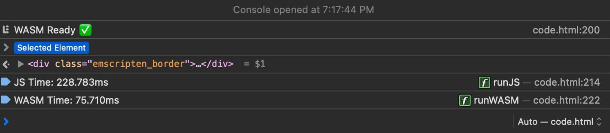
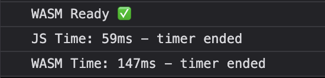
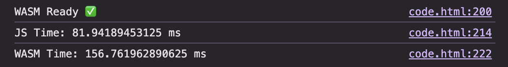
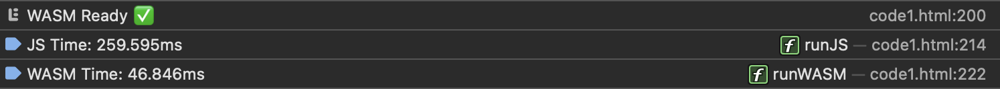
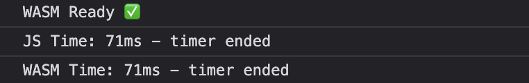
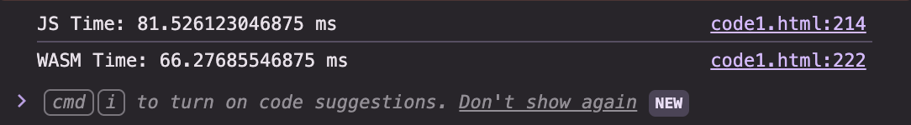

High-performance code for the web
Somsubhra Mukherjee
25MF10063
👉 A low-level binary format for the web
👉 Runs at near-native speed
👉 Compile C / C++ / Rust → WASM
💡 Not meant to be written by hand
👉 Near-Native Performance:- WebAssembly enables high-performance execution in the browser, making compute-heavy applications like games, CAD tools, and video editors feasible on the web.
👉 Multi-Language Support:- It allows code written in languages like C, C++, and Rust to run directly in the browser, avoiding the need to rewrite everything in JavaScript.
👉 Secure & Portable Execution:- WASM runs in a sandboxed environment with a compact binary format, ensuring fast, secure, and cross-browser compatibility.
👉 Complementary to JavaScript:- It complements JavaScript by handling performance-critical tasks, while JavaScript manages UI and application logic.
Best Solution: WebAssembly + JavaScript
👉 Runs inside a sandboxed VM
👉 No access to OS / File System / Network
👉 Uses only its own memory
👉 Talks via JavaScript
👉 Uses Web APIs (DOM, WebGL, Fetch)
👉 Access is controlled
WASM Module ➝ WASM VM ➝ Browser ➝ Your System
Web Assembly binary that has been compiled by the browser into executable machine code. A method is stateless and can be explicitly shared between windows, and workers. A module declares imports and exports just like an ES module.
A resizable Array Buffer that contains the linear array of bytes read and written by WebAssembly’s low-level memory access instructions.
A resizable typed array of references (e.g. to functions) that could not otherwise be stored as raw bytes in memory.
A module paired with all the state it uses at runtime including a Memory, Table and set of imported tables.
1. Porting C/C++ apps with Emscripten
2. Writing / generating WASM at binary level
3. Building apps in Rust targeting WASM
4. Using AssemblyScript (TypeScript-like → WASM)
👉 Tools like WasmFiddle / WasmExplorer are great for beginners
👉 Emscripten = production-grade toolchain
👉 Generates: .wasm + JS glue + HTML
👉 JavaScript glue connects WASM to browser APIs
👉 Supports libraries: SDL, OpenGL, POSIX
👉 Output: ready-to-run web application
⚠️ WASM cannot directly access Web APIs (yet)
Compiling C/C++ produces three key files
.html
Entry point
Loads everything in browser
.js
Glue code
Connects WASM ↔ Browser APIs
.wasm
Compiled binary
High-performance execution
JavaScript connects WASM to Browser APIs
1. Library Mapping
OpenGL → WebGL, SDL → Browser Events
2. WASM Execution
fetch() + WebAssembly.instantiate()
3. Communication
Function calls & data transfer
JS controls, WASM provides high performance.
They work together via the WASM JS API.
Loading a WASM module:
Old way: Fetch → Convert → Compile → Instantiate
New way (faster):
WebAssembly.instantiateStreaming(
fetch("file.wasm"), importObject
)WASM cannot access JS directly → must pass functions manually.
const importObject = {
my_namespace: {
imported_func: (arg) => console.log(arg)
}
};
JS provides external functionality called by WASM.
Continuous block of bytes, like raw RAM.
const memory = new WebAssembly.Memory({initial: 10,
maximum: 100});Accessing memory:
const data = new DataView(memory.buffer);
data.setUint32(0, 42, true);Memory is mutable, growing memory invalidates old buffer:
memory.grow(1);C/C++ uses function pointers → unsafe in raw memory.
Solution: Tables → safe array of function references.
Functions stored in table and passed around by index instead of pointer.
Globals: Shared variables between JS and WASM modules.
const global = new WebAssembly.Global({value: "i32",
mutable: true}, 0);
Multiplicity: One module → many instances, one memory → multiple modules for dynamic linking.
JS API:
instantiate() → runs WASMMemory → manage memoryTable → function storageGlobal → shared variablesWorkflow:
.wasm via
instantiateStreaming
Install the compiler toolchain to generate WebAssembly from C/C++.
pip install emscripten
emsdk install latestThe Emscripten toolchain is essential for converting C/C++ code to WASM.
Example C program:
#include <stdio.h>
int main() {
printf("Hello from WASM!\n");
return 0;
}
Save this as hello.c
emcc hello.c -o hello.htmlOutput files:
hello.wasm – WebAssembly binaryhello.js – JavaScript glue codehello.html – Loader pageImportant: Use HTTP server, not file:// protocol!
python -m http.server 8000
Then open http://localhost:8000/hello.html in your browser.
WASM modules require HTTP for security reasons.
// Exported C function
int add(int a, int b) { return a + b; }
// Call from JavaScript
Module.ccall('add', 'number',
['number', 'number'],
[5, 3]
);
Use ccall() to invoke C functions from JS.
Everything is a tree in parentheses. The first label identifies the node type.
(module (memory 1) (func))Structure: Root is "module", children are "memory" and "func".
WAT is the human-readable representation of WASM binary modules.
Core executable units with parameters and return types:
(func (param i32) (param i32) (result f64)
(local i32)
;; function body instructions
)Numeric Types:
Stack Model: Instructions push and pop values. No direct variable manipulation outside locals.
Locals & Parameters:
(local.get $var)
(local.set $var)Parameters are treated as initialized locals.
Linear Memory:
(memory 1)
(import "js" "mem" (memory 1))Call JS functions or expose WASM functions:
(import "console" "log" (func $log (param i32)))
(export "sum" (func $sum))WAT is useful for:
Convert between WAT and binary with wasm2wat and wat2wasm tools.
.html, .wasm and .js filesextern "C" {
int heavy(int n) {
int sum = 0;
for(int i = 0; i < n; i++) {
sum += (i % 10);
}
return sum;
}
}extern "C" tells the C++ compiler not to mangle the function name, so it can be called from JavaScript or C with a simple, predictable name.
emcc code.cpp -o code.html \
-s EXPORTED_FUNCTIONS='["_heavy"]' \
-s EXPORTED_RUNTIME_METHODS='["cwrap"]'heavy to
JavaScriptcwrap for easy JS calls
Code Block 1:
This code adds a textarea to show output, buttons to run JS or WASM functions, and a paragraph to display the result.
Code Block 2:
let heavyWASM;
Module.onRuntimeInitialized = function() {
heavyWASM = Module.cwrap('heavy', 'number', ['number']);
console.log("WASM Ready ✅");
};
function heavyJS(n) {
let sum = 0;
for(let i = 0; i < n; i++) {
sum += (i % 10);
}
return sum;
}
function runJS() {
const N = 5e7;
console.time("JS Time");
let res = heavyJS(N);
console.timeEnd("JS Time");
document.getElementById("result").innerText = "JS Result: " + res;
}
function runWASM() {
const N = 5e7;
console.time("WASM Time");
let res = heavyWASM(N);
console.timeEnd("WASM Time");
document.getElementById("result").innerText = "WASM Result: " + res;
}
This code defines a JS version and a WASM version of heavy, then runs and times each when the buttons are clicked, displaying the results.
Browsers block loading .wasm files over file://. To run the demo
properly, start a local HTTP server:
python3 -m http.server 8000
Then open: http://localhost:8000/code.html in your browser.
.wasm via HTTP.WASM Execution time comparison across browsers:
JS Execution time comparison across browsers:
WASM Execution Time: ~75ms

WASM Execution Time: ~147ms

WASM Execution Time: ~156ms

.html, .wasm and .js filesextern "C" {
int heavy(int n) {
int sum = 0;
for(int i = 0; i < n; i++) {
sum += (i % 10);
}
return sum;
}
}extern "C" tells the C++ compiler not to mangle the function name, so it can be called from JavaScript or C with a simple, predictable name.
emcc code1.cpp -O3 \
-s WASM=1 \
-s EXPORTED_FUNCTIONS='["_heavy"]' \
-s EXPORTED_RUNTIME_METHODS='["ccall","cwrap"]' \
-o code1.jsheavy to
JavaScriptcwrap for easy JS calls
Code Block 1:
This code adds a textarea to show output, buttons to run JS or WASM functions, and a paragraph to display the result.
Code Block 2:
let heavyWASM;
Module.onRuntimeInitialized = function() {
heavyWASM = Module.cwrap('heavy', 'number', ['number']);
console.log("WASM Ready ✅");
};
function heavyJS(n) {
let sum = 0;
for(let i = 0; i < n; i++) {
sum += (i % 10);
}
return sum;
}
function runJS() {
const N = 5e7;
console.time("JS Time");
let res = heavyJS(N);
console.timeEnd("JS Time");
document.getElementById("result").innerText = "JS Result: " + res;
}
function runWASM() {
const N = 5e7;
console.time("WASM Time");
let res = heavyWASM(N);
console.timeEnd("WASM Time");
document.getElementById("result").innerText = "WASM Result: " + res;
}
This code defines a JS version and a WASM version of heavy, then runs and times each when the buttons are clicked, displaying the results.
Browsers block loading .wasm files over file://. To run the demo
properly, start a local HTTP server:
python3 -m http.server 8000
Then open: http://localhost:8000/code.html in your browser.
.wasm via HTTP.WASM Execution time comparison across browsers:
JS Execution time comparison across browsers:
WASM Execution Time: ~75ms

WASM Execution Time: ~147ms

WASM Execution Time: ~156ms

Near-native execution speed for compute-heavy tasks like gaming, simulations, and real-time processing.
Runs in a sandboxed environment with memory-safe execution model and controlled access.
Works across Chrome, Firefox, Safari. Same binary runs everywhere without recompilation.
Write in C, C++, or Rust. Compile once and run on the web.
Requires JavaScript as a bridge between WASM and browser APIs.
Load time + compilation can add latency, especially for large modules.
Frequent function calls reduce performance gains due to crossing boundaries.
Advanced features not fully standardized; tooling still maturing.
🎮 Game Engines
Unity, Unreal, and custom engines running in browsers.
🖼️ Media Processing
Video editing, image filters, real-time effects.
🔬 Scientific Computing
Simulations, numerical analysis, data visualization.
🎵 Specialized Software
CAD tools, music production, design software.
🔐 Security & Blockchain
Cryptographic computations, smart contracts.
💻 Web Apps
Figma, Photoshop, Google Sheets (complex calculations).
Run WASM outside browsers with standardized system interface.
Node.js, serverless computing, edge computing platforms.
Shared memory + parallel execution for true concurrent computation.
Better support for high-level languages like Python, Java.
Modular, reusable WASM components with standardized interfaces.
Direct DOM manipulation without JavaScript bridge overhead.
WebAssembly brings system-level performance to the web browser, enabling high-performance gaming, scientific computing, and media processing directly in browsers.
Somsubhra Mukherjee
25MF10063